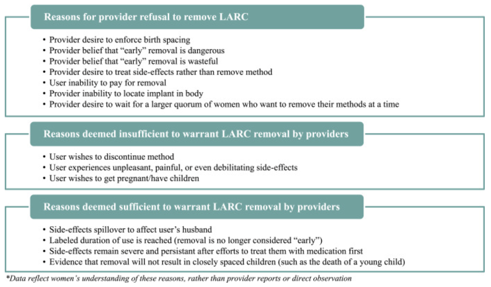
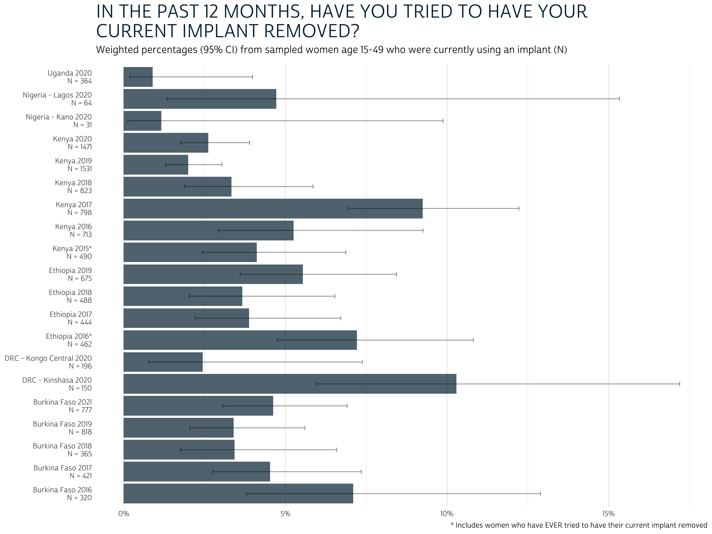
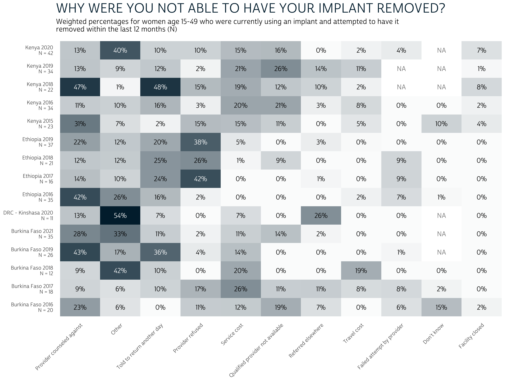

For women who tried and were unable to have their implant removed in the past year, were the main obstacles related to provider willingness, access to services, or something else?
Subdermal implants - together with IUDs - are part of a group of family planning methods known as long-acting reversible contraceptives (LARCs). Because they are highly effective, increasingly affordable, and relatively easy to provide, use of implants has grown very rapidly in nearly all of the countries surveyed by PMA since 2014. However, researchers have cautioned that some implant users in these countries experience difficulty seeking implant removal services from their healthcare provider. Senderowicz and Kolenda (2022), for example, show that focus group participants in one FP2020 country struggled to convince providers to remove their implant prior to its labelled duration; women’s expressed desire to discontinue the method were not considered legitimate in comparison with other factors:

In response to these concerns, recent PMA surveys have asked current implant users 1) whether they have tried to get their implant removed in the past year, and 2) if so, why they were unable to get their implant removed. Let’s take a look at the results they have collected to date.
The structure of these two questions has evolved somewhat since they were first posed to sampled women in Burkina Faso, Ethiopia, and Kenya between 2015 and 2016. Initially, current implant users in Ethiopia and Kenya were asked whether they had ever tried to have their implant removed (FPIMPREMOVETRY), and users in all three countries could only select one reason why they were unable to have it removed at that time (FPIMPRMVYNOT).
After 2016, the questionnaire in each country was changed to ask only
about implant removal in the last year (FPIMPREMOVEYR),
and the Burkina Faso and Kenya questionnaires allowed women to select
more than one reason why they were unable to have it removed
(Ethiopia continued to allow selection of only one reason). Each of the
11 reasons included in this multiple-response question is available as a
binary variable named with the prefix FPIMPRMVY (listed in
questionnaire order):
These questions were added to samples collected from the DRC, Nigeria, and Uganda beginning in 2020; however, no information is available about reasons for non-removal in the Uganda sample, where neither of the 3 qualifying women selected a reason. In Nigeria, only 4 women qualified and provided a reason across both samples from Lagos and Kano; in the DRC, there were only 4 in Kongo Central and 11 in Kinshasa.
Data availability is summarised in the table below. Women could offer multiple reasons for an implant removal attempted in the last year unless otherwise noted.
| Country | Sample Years | Notes |
|---|---|---|
| Burkina Faso | 2016b-2021 | Select one reason (2016b) |
| DRC | 2020 | |
| Ethiopia | 2016-2019 | Select one reason (2016-2019); Ever tried (2016) |
| Kenya | 2015b-2020 | Select one reason (2015-2016); Reasons unavailable (2017); Ever tried (2015b) |
| Nigeria | 2020 | |
| Uganda | 2020 | Reasons unavailable |
With these caveats in mind, we’ll start by combining
FPIMPREMOVETRY with FPIMPREMOVEYR to estimate
the prevalence of attempted implant removal among current implant users
in each population.
We’ve downloaded an extract from IPUMS PMA containing all of the variables and samples listed above (female respondents only), and we’ll load it into R along with several analysis packages as follows:
Before we jump into our analysis, we’ll make three minor adjustments
to this data extract. First, we’ll drop cases where PMA has assigned a
weight of zero in FQWEIGHT.1 Second, we’ll create a variable
called POP to label the population represented by each
sample.2. Finally, we’ll make two minor
modifications to STRATA
so that it can be used for samples with data where it is missing, or
where there are strata with data from only one sample cluster (EAID).3
dat <- dat %>%
filter(FQWEIGHT > 0) %>%
mutate(
POP = case_when(
!is.na(GEOCD) ~ paste("DRC -", GEOCD %>% as_factor, YEAR),
!is.na(GEONG) ~ paste("Nigeria -", GEONG %>% as_factor, YEAR),
TRUE ~ paste(COUNTRY %>% as_factor, YEAR)
),
STRATARC = case_when(
!is.na(GEOCD) ~ as.numeric(GEOCD),
as_factor(COUNTRY) %in% c("Ethiopia", "Uganda") ~ as.numeric(URBAN),
TRUE ~ as.numeric(STRATA)
)
)
Now, we can easily calculate the estimated proportion of implant
users in each population who tried to have their implant removed in the
last year (or ever as noted in some early samples). We start by
combining the information in FPIMPREMOVETRY with
FPIMPREMOVEYR in a variable we’ll call
tried.
Notice that FPIMPREMOVETRY and
FPIMPREMOVEYR use composite coding to
indicate both 1) whether implant removal was attempted, and 2) whether
removal was sought by a health professional (in available samples).
However, FPIMPREMOVETRY uses codes 21 and 22 to indicate
“yes”, while FPIMPREMOVEYR uses codes 10, 11, and 12. The
code 98 is used for non-response, while 99 is used for women who were
not currently implant users; we’ll recode these values with
NA.
dat <- dat %>%
mutate(
tried = case_when(
FPIMPREMOVETRY < 90 ~ FPIMPREMOVETRY %in% 20:30,
FPIMPREMOVEYR < 90 ~ FPIMPREMOVEYR %in% 10:20
)
)
# review recoding
dat %>% count(tried, FPIMPREMOVETRY, FPIMPREMOVEYR)
# A tibble: 10 × 4
tried FPIMPREMOVETRY FPIMPREMOVEYR n
<lgl> <int+lbl> <int+lbl> <int>
1 FALSE 10 [No] NA 894
2 FALSE NA 0 [No] 10037
3 TRUE 21 [Yes, by a health professional] NA 57
4 TRUE 22 [Yes, by a non-health professional] NA 1
5 TRUE NA 10 [Yes] 342
6 TRUE NA 11 [Yes, health care professional] 69
7 TRUE NA 12 [Yes, not health care professional] 1
8 NA 99 [NIU (not in universe)] NA 11451
9 NA NA 98 [No response or missing] 6
10 NA NA 99 [NIU (not in universe)] 83301In tried, we’ve created a logical
binary variable. For users who might only be interested in the
point-estimate for each population (ignoring confidence interval
estimation), you can now take a weighted.mean of
tried weighted by FQWEIGHT.
We’ll also include n to show the number of responding
implant users in each sample.
dat %>%
group_by(POP) %>%
summarise(
tried_prop = weighted.mean(tried, FQWEIGHT, na.rm= TRUE),
n = sum(!is.na(tried))
)
# A tibble: 20 × 3
POP tried_prop n
<chr> <dbl> <int>
1 Burkina Faso 2016 0.0710 320
2 Burkina Faso 2017 0.0453 421
3 Burkina Faso 2018 0.0342 365
4 Burkina Faso 2019 0.0340 818
5 Burkina Faso 2021 0.0462 777
6 DRC - Kinshasa 2020 0.103 150
7 DRC - Kongo Central 2020 0.0244 196
8 Ethiopia 2016 0.0722 462
9 Ethiopia 2017 0.0388 444
10 Ethiopia 2018 0.0366 488
11 Ethiopia 2019 0.0554 675
12 Kenya 2015 0.0411 490
13 Kenya 2016 0.0525 713
14 Kenya 2017 0.0925 798
15 Kenya 2018 0.0333 823
16 Kenya 2019 0.0199 1531
17 Kenya 2020 0.0262 1471
18 Nigeria - Kano 2020 0.0116 31
19 Nigeria - Lagos 2020 0.0472 64
20 Uganda 2020 0.00894 364To obtain a 95% confidence interval for each estimate, we’ll need to
use tools from the srvyr package.
First, we group the data by POP to ensure that the correct
degrees of freedom are used from each sample. Then, we summarise
each group using FQWEIGHT and sample-specific clusters and
strata. Finally, survey_mean
gives us an asymmetric confidence interval (adjusted for proportions
near 0% or 100%).
We’ll want to graph these results, so we’ll save the output as
tried_tbl.
tried_tbl <- dat %>%
group_by(POP) %>%
summarise(
cur_data() %>%
as_survey_design(weight = FQWEIGHT, id = EAID, strata = STRATARC) %>%
summarise(
tried_prop = survey_mean(tried, proportion = TRUE, vartype = "ci"),
n = sum(!is.na(tried))
)
)
tried_tbl
# A tibble: 20 × 5
POP tried_prop tried_prop_low tried_prop_upp n
<chr> <dbl> <dbl> <dbl> <int>
1 Burkina Faso 2016 0.0710 0.0380 0.129 320
2 Burkina Faso 2017 0.0453 0.0276 0.0735 421
3 Burkina Faso 2018 0.0342 0.0175 0.0658 365
4 Burkina Faso 2019 0.0340 0.0205 0.0560 818
5 Burkina Faso 2021 0.0462 0.0306 0.0691 777
6 DRC - Kinshasa 2020 0.103 0.0596 0.172 150
7 DRC - Kongo Central 2020 0.0244 0.00778 0.0738 196
8 Ethiopia 2016 0.0722 0.0475 0.108 462
9 Ethiopia 2017 0.0388 0.0221 0.0671 444
10 Ethiopia 2018 0.0366 0.0203 0.0653 488
11 Ethiopia 2019 0.0554 0.0360 0.0844 675
12 Kenya 2015 0.0411 0.0243 0.0687 490
13 Kenya 2016 0.0525 0.0292 0.0926 713
14 Kenya 2017 0.0925 0.0695 0.122 798
15 Kenya 2018 0.0333 0.0187 0.0586 823
16 Kenya 2019 0.0199 0.0130 0.0304 1531
17 Kenya 2020 0.0262 0.0175 0.0389 1471
18 Nigeria - Kano 2020 0.0116 0.00126 0.0988 31
19 Nigeria - Lagos 2020 0.0472 0.0134 0.153 64
20 Uganda 2020 0.00894 0.00196 0.0399 364Let’s plot these results as a bar chart with error bars for each
confidence interval. We’ll organize the bar for each sample in rows,
where the length of each bar on the x-axis is mapped to
tried_prop. The length of each error bar will be mapped to
tried_prop_low and tried_prop_upp. Because the
Ethiopia 2016 and Kenya 2015 samples actually ask whether the woman
ever tried to have her implant removed, we’ll add a
* symbol to each of those POP labels, along
with a caption at the bottom.
tried_tbl %>%
mutate(
POP = if_else(
POP %in% c("Ethiopia 2016", "Kenya 2015"),
paste0(POP, "*"),
POP
),
POP = paste0(POP, "\nN = ", n)
) %>%
ggplot(aes(x = tried_prop, y = POP,
xmin = tried_prop_low, xmax = tried_prop_upp)) +
geom_bar(stat = "identity", fill = "#00263A", alpha = 0.7) +
geom_errorbar(width = 0.2, alpha = 0.4) +
scale_x_continuous(labels = scales::label_percent()) +
labs(
title = paste("IN THE PAST 12 MONTHS, HAVE YOU TRIED TO HAVE YOUR CURRENT",
"IMPLANT REMOVED?") %>%
str_wrap(50),
subtitle = paste("Weighted percentages (95% CI) from sampled women age",
"15-49 who were currently using an implant (N)"),
caption = paste("* Includes women who have EVER tried to have their",
"current implant removed"),
y = NULL,
x = NULL
) +
theme_minimal() +
theme(
text = element_text(family="cabrito"),
panel.grid.major.y = element_blank(),
plot.title = element_text(size = 22, color = "#00263A",
hjust = 0, margin = margin(b = 5)),
plot.subtitle = element_text(size = 12, hjust = 0,
margin = margin(b = 10)),
legend.position = "none"
)

Looking at these results, a few things stand out: first, there doesn’t appear to be (at least to my eye) a clear pattern in the way this issue has developed over time or across countries. While the number of sampled implant users has grown over time (reflecting its increased popularity), the share of current users who have tried to have their implant removed is almost always within a fairly regular confidence interval. Second, we rarely expect that more than 10% of current implant users have attempted removal, and most outlying populations probably don’t exceed about 15% of current users; the mean value across sampled populations is probably closer to 5%.
Another important thing to consider here is the effect of survival bias. Remember: these data only include women who are current implant users, so they exclude women who actually did have their implant removed successfully within the past year. If we were able to identify all of the women who used implants in the past year, the proportion who attempted removal would be higher, but it would include women who experienced no difficulty doing so.
Turning our attention to reasons for failed removal, we’ll again have
to contend with two sets of variables: in one set, women could only
select one reason in FPIMPRMVYNOT; in the other set, women
could select any number of reasons in other variables named with the
prefix FPIMPRMVY.
We’ll be modifying the latter set with responses from
FPIMPRMVYNOT, so it might be useful to set our IPUMS
variable labels aside for now. We’ll return to them
after data manipulation so that we can use them directly on our
graph.
Tip: you can use ipums_var_info to get a tidy data dictionary for any IPUMS extract! This includes columns for the variable label, a full-text variable description, and a table of value labels.
reason_labels <- dat %>%
select(starts_with("FPIMPRMVY")) %>%
ipums_var_info()
reason_labels
# A tibble: 12 × 4
var_name var_label var_desc val_la…¹
<chr> <chr> <chr> <list>
1 FPIMPRMVYNOT Reason not able to have implant removed "For women w… <tibble>
2 FPIMPRMVYCOST Why implant not removed: Service cost "For women w… <tibble>
3 FPIMPRMVYCOUNS Why implant not removed: Provider counseled against "For women w… <tibble>
4 FPIMPRMVYDK Why implant not removed: Don't know "For women w… <tibble>
5 FPIMPRMVYCLOSED Why implant not removed: Facility closed "For women w… <tibble>
6 FPIMPRMVYOTH Why implant not removed: Other "For women w… <tibble>
7 FPIMPRMVYREFUSE Why implant not removed: Provider refused "For women w… <tibble>
8 FPIMPRMVYELSEWH Why implant not removed: Referred elsewhere "For women w… <tibble>
9 FPIMPRMVYRETURN Why implant not removed: Told to return another day "For women w… <tibble>
10 FPIMPRMVYTRAVEL Why implant not removed: Travel cost "For women w… <tibble>
11 FPIMPRMVYUNAVAIL Why implant not removed: Qualified provider not available "For women w… <tibble>
12 FPIMPRMVYUNSUCC Why implant not removed: Failed attempt by provider "For women w… <tibble>
# … with abbreviated variable name ¹val_labelsWe’ll remove the repeated text “Why implant not removed:”, along with the other columns we won’t be using here.
reason_labels <- reason_labels %>%
mutate(var_label = var_label %>% str_remove("Why implant not removed: ")) %>%
select(var_name, var_label)
reason_labels
# A tibble: 12 × 2
var_name var_label
<chr> <chr>
1 FPIMPRMVYNOT Reason not able to have implant removed
2 FPIMPRMVYCOST Service cost
3 FPIMPRMVYCOUNS Provider counseled against
4 FPIMPRMVYDK Don't know
5 FPIMPRMVYCLOSED Facility closed
6 FPIMPRMVYOTH Other
7 FPIMPRMVYREFUSE Provider refused
8 FPIMPRMVYELSEWH Referred elsewhere
9 FPIMPRMVYRETURN Told to return another day
10 FPIMPRMVYTRAVEL Travel cost
11 FPIMPRMVYUNAVAIL Qualified provider not available
12 FPIMPRMVYUNSUCC Failed attempt by provider We’ll again transform each of our multiple-response variables into a
logical binary variable, where NA
represents women who were either not currently an implant user or had
not tried to remove it in the last year (these cases are marked “NIU”
for “Not in universe”). This should impact all of the variables with the
prefix FPIMPRMVY except FPIMPRMVYNOT (the
variable used for samples accepting only one reason per woman).
dat <- dat %>%
mutate(
across(
starts_with("FPIMPRMVY") & !FPIMPRMVYNOT,
~case_when(tried ~ .x == 1)
)
)
Next, we’ll make a helper variable to indicate whether we should
update each of these variables with appropriate values from
FPIMPRMVYNOT. This is the case only if a woman
tried to remove her implant and FPIMPRMVYNOT
is not missing (NA) for her sample.
Finally, we’ll update each of the multiple-response
variables with each of the appropriate values from
FPIMPRMVYNOT as needed, leaving it unchanged otherwise.
dat <- dat %>%
mutate(
FPIMPRMVYCLOSED = update %>% if_else(FPIMPRMVYNOT == 1, FPIMPRMVYCLOSED),
FPIMPRMVYUNAVAIL = update %>% if_else(FPIMPRMVYNOT == 2, FPIMPRMVYUNAVAIL),
FPIMPRMVYUNSUCC = update %>% if_else(FPIMPRMVYNOT == 3, FPIMPRMVYUNSUCC),
FPIMPRMVYREFUSE = update %>% if_else(FPIMPRMVYNOT == 4, FPIMPRMVYREFUSE),
FPIMPRMVYCOST = update %>% if_else(FPIMPRMVYNOT == 5, FPIMPRMVYCOST),
FPIMPRMVYTRAVEL = update %>% if_else(FPIMPRMVYNOT == 6, FPIMPRMVYTRAVEL),
FPIMPRMVYCOUNS = update %>% if_else(FPIMPRMVYNOT == 7, FPIMPRMVYCOUNS),
FPIMPRMVYRETURN = update %>% if_else(FPIMPRMVYNOT == 8, FPIMPRMVYRETURN),
FPIMPRMVYELSEWH = update %>% if_else(FPIMPRMVYNOT == 9, FPIMPRMVYELSEWH),
FPIMPRMVYOTH = update %>% if_else(FPIMPRMVYNOT == 10, FPIMPRMVYOTH),
FPIMPRMVYDK = update %>% if_else(FPIMPRMVYNOT == 97, FPIMPRMVYDK),
)
Before we can estimate the proportion of failed removal cases caused by each reason, we’ll need to address a few more data availability issues. For starters, we mentioned above that the Kenya 2017 and Uganda 2020 samples contain no data on any of the reasons, so we’ll drop them from our dataset right away.
Another issue is that some samples include very few implant
users who attempted to remove it in the last year. Following our data
cleaning procedure above, you’ll see the total number of qualifying
cases if you count the number of non-NA values for any one of the
FPIMPRMVY variables we’ve modified. For example, we’ll use
FPIMPRMVYCOUNS:
# A tibble: 18 × 2
POP n
<chr> <int>
1 Burkina Faso 2016 20
2 Burkina Faso 2017 18
3 Burkina Faso 2018 12
4 Burkina Faso 2019 26
5 Burkina Faso 2021 35
6 DRC - Kinshasa 2020 11
7 DRC - Kongo Central 2020 4
8 Ethiopia 2016 35
9 Ethiopia 2017 16
10 Ethiopia 2018 21
11 Ethiopia 2019 37
12 Kenya 2015 23
13 Kenya 2016 34
14 Kenya 2018 22
15 Kenya 2019 34
16 Kenya 2020 42
17 Nigeria - Kano 2020 1
18 Nigeria - Lagos 2020 3In some cases, fewer than five women reported trying to remove their implant in the past year. We’ll omit these samples from our final analysis, where the proportion selecting any one reason is not likely to be very meaningful.
Finally, there are also several samples where certain reasons were
not included in the questionnaire: the Kenya 2018-2019 samples do not
include “failed attempt by provider”, while the Kenya 2018-2020, Burkina
Faso 2019-2021, and DRC 2020 samples include no option for “don’t know”.
These samples include only NA values for the variables
representing each of those reasons.
If you attempt to estimate the standard error for proportion
containing only NA values, the srvyr package
generates an error like this one:
reasons %>%
filter(POP == "Kenya 2020") %>%
as_survey_design(weight = FQWEIGHT, id = EAID, strata = STRATARC) %>%
summarise(
survey_mean(FPIMPRMVYDK, proportion = TRUE, vartype = "ci")
)
Error in `dplyr::summarise()`:
! Problem while computing `..1 = survey_mean(FPIMPRMVYDK, proportion = TRUE, vartype =
"ci")`.
Caused by error in `family$linkfun()`:
! Argument mu must be a nonempty numeric vectorFortunately, you can avoid this error by setting
proportion = FALSE in only those cases. This will return
NA for the estimated proportion and confidence
interval.
reasons %>%
filter(POP == "Kenya 2020") %>%
as_survey_design(weight = FQWEIGHT, id = EAID, strata = STRATARC) %>%
summarise(
survey_mean(FPIMPRMVYDK, proportion = !all(is.na(FPIMPRMVYDK)), vartype = "ci")
)
# A tibble: 1 × 3
coef `_low` `_upp`
<dbl> <dbl> <dbl>
1 NA NA NAWe’ll use across to summarise each reason this way, and then we’ll use pivot_longer to store the results from each reason in a separate row.
reasons_tbl <- reasons %>%
group_by(POP) %>%
summarise(
cur_data() %>%
as_survey_design(weight = FQWEIGHT, id = EAID, strata = STRATARC) %>%
summarise(across(
starts_with("FPIMPRMVY") & !FPIMPRMVYNOT,
~survey_mean(
.x,
proportion = !all(is.na(.x)),
vartype = "ci"
) %>% list()
))
) %>%
pivot_longer(where(is.list), names_to = "var_name") %>%
unnest(value)
reasons_tbl
# A tibble: 165 × 5
POP var_name coef `_low` `_upp`
<chr> <chr> <dbl> <dbl> <dbl>
1 Burkina Faso 2016 FPIMPRMVYCOST 1.16e- 1 2.57e- 2 3.97e- 1
2 Burkina Faso 2016 FPIMPRMVYCOUNS 2.28e- 1 6.88e- 2 5.42e- 1
3 Burkina Faso 2016 FPIMPRMVYDK 1.50e- 1 4.03e- 2 4.27e- 1
4 Burkina Faso 2016 FPIMPRMVYCLOSED 1.93e- 2 2.52e- 3 1.33e- 1
5 Burkina Faso 2016 FPIMPRMVYOTH 5.52e- 2 1.56e- 2 1.77e- 1
6 Burkina Faso 2016 FPIMPRMVYREFUSE 1.14e- 1 3.32e- 2 3.23e- 1
7 Burkina Faso 2016 FPIMPRMVYELSEWH 6.56e- 2 8.28e- 3 3.72e- 1
8 Burkina Faso 2016 FPIMPRMVYRETURN 7.19e-12 3.90e-12 1.32e-11
9 Burkina Faso 2016 FPIMPRMVYTRAVEL 7.19e-12 3.90e-12 1.32e-11
10 Burkina Faso 2016 FPIMPRMVYUNAVAIL 1.87e- 1 4.53e- 2 5.26e- 1
11 Burkina Faso 2016 FPIMPRMVYUNSUCC 6.50e- 2 9.47e- 3 3.36e- 1
12 Burkina Faso 2017 FPIMPRMVYCOST 2.61e- 1 9.96e- 2 5.29e- 1
13 Burkina Faso 2017 FPIMPRMVYCOUNS 9.16e- 2 1.70e- 2 3.70e- 1
14 Burkina Faso 2017 FPIMPRMVYDK 1.90e- 2 2.43e- 3 1.33e- 1
15 Burkina Faso 2017 FPIMPRMVYCLOSED 7.07e-12 4.10e-12 1.22e-11
16 Burkina Faso 2017 FPIMPRMVYOTH 6.46e- 2 8.29e- 3 3.64e- 1
17 Burkina Faso 2017 FPIMPRMVYREFUSE 1.68e- 1 5.01e- 2 4.38e- 1
18 Burkina Faso 2017 FPIMPRMVYELSEWH 1.12e- 1 2.03e- 2 4.35e- 1
19 Burkina Faso 2017 FPIMPRMVYRETURN 9.65e- 2 1.72e- 2 3.95e- 1
20 Burkina Faso 2017 FPIMPRMVYTRAVEL 7.66e- 2 9.92e- 3 4.07e- 1
# … with 145 more rowsTo finish the table, we’ll now attach the number of
pop_cases and the appropriate reason_labels we
saved above.
reasons_tbl <- reasons_tbl %>%
left_join(pop_cases, by = "POP") %>%
left_join(reason_labels, by = "var_name")
reasons_tbl
# A tibble: 165 × 7
POP var_name coef `_low` `_upp` n var_label
<chr> <chr> <dbl> <dbl> <dbl> <int> <chr>
1 Burkina Faso 2016 FPIMPRMVYCOST 1.16e- 1 2.57e- 2 3.97e- 1 20 Service cost
2 Burkina Faso 2016 FPIMPRMVYCOUNS 2.28e- 1 6.88e- 2 5.42e- 1 20 Provider counseled against
3 Burkina Faso 2016 FPIMPRMVYDK 1.50e- 1 4.03e- 2 4.27e- 1 20 Don't know
4 Burkina Faso 2016 FPIMPRMVYCLOSED 1.93e- 2 2.52e- 3 1.33e- 1 20 Facility closed
5 Burkina Faso 2016 FPIMPRMVYOTH 5.52e- 2 1.56e- 2 1.77e- 1 20 Other
6 Burkina Faso 2016 FPIMPRMVYREFUSE 1.14e- 1 3.32e- 2 3.23e- 1 20 Provider refused
7 Burkina Faso 2016 FPIMPRMVYELSEWH 6.56e- 2 8.28e- 3 3.72e- 1 20 Referred elsewhere
8 Burkina Faso 2016 FPIMPRMVYRETURN 7.19e-12 3.90e-12 1.32e-11 20 Told to return another day
9 Burkina Faso 2016 FPIMPRMVYTRAVEL 7.19e-12 3.90e-12 1.32e-11 20 Travel cost
10 Burkina Faso 2016 FPIMPRMVYUNAVAIL 1.87e- 1 4.53e- 2 5.26e- 1 20 Qualified provider not avail…
11 Burkina Faso 2016 FPIMPRMVYUNSUCC 6.50e- 2 9.47e- 3 3.36e- 1 20 Failed attempt by provider
12 Burkina Faso 2017 FPIMPRMVYCOST 2.61e- 1 9.96e- 2 5.29e- 1 18 Service cost
13 Burkina Faso 2017 FPIMPRMVYCOUNS 9.16e- 2 1.70e- 2 3.70e- 1 18 Provider counseled against
14 Burkina Faso 2017 FPIMPRMVYDK 1.90e- 2 2.43e- 3 1.33e- 1 18 Don't know
15 Burkina Faso 2017 FPIMPRMVYCLOSED 7.07e-12 4.10e-12 1.22e-11 18 Facility closed
16 Burkina Faso 2017 FPIMPRMVYOTH 6.46e- 2 8.29e- 3 3.64e- 1 18 Other
17 Burkina Faso 2017 FPIMPRMVYREFUSE 1.68e- 1 5.01e- 2 4.38e- 1 18 Provider refused
18 Burkina Faso 2017 FPIMPRMVYELSEWH 1.12e- 1 2.03e- 2 4.35e- 1 18 Referred elsewhere
19 Burkina Faso 2017 FPIMPRMVYRETURN 9.65e- 2 1.72e- 2 3.95e- 1 18 Told to return another day
20 Burkina Faso 2017 FPIMPRMVYTRAVEL 7.66e- 2 9.92e- 3 4.07e- 1 18 Travel cost
# … with 145 more rowsBecause we’re working with a larger number of samples and reasons for failed removal, we’ll build a concise heatmap showing the proportion associated with each response. We’ll arrange the reasons on our x-axis in the order of their average proportion across samples. Then, we’ll map a color gradient and text label to the proportion in each cell (switching font color from white to black if the proportion exceeds 0.35).
reasons_tbl %>%
mutate(
var_label = var_label %>% fct_reorder(coef, mean, na.rm = T) %>% fct_rev(),
final = paste0(POP, paste0("\nN = ", n)),
coef_pct = if_else(is.na(coef), "NA", scales::percent(coef, 1))
) %>%
ggplot(aes(x = var_label, y = final, fill = coef)) +
geom_tile() +
geom_text(aes(label = coef_pct, color = coef > 0.35)) +
theme_minimal() +
theme(
text = element_text(family="cabrito"),
panel.grid = element_blank(),
axis.text.x = element_text(angle = 45, vjust = 1, hjust = 1,
margin = margin(t = 5)),
plot.title = element_text(size = 22, color = "#00263A",
hjust = 0, margin = margin(b = 5)),
plot.subtitle = element_text(size = 12, hjust = 0, margin = margin(b = 10)),
legend.position = "none"
) +
scale_fill_gradient(
na.value = "transparent",
low = "#00263A05",
high = "#00263A"
) +
scale_color_manual(values = c("black", "white")) +
labs(
title = "WHY WERE YOU NOT ABLE TO HAVE YOUR IMPLANT REMOVED?",
subtitle = paste(
"Weighted percentages for women age 15-49 who were currently using an",
"implant and attempted to have it \nremoved within the last 12 months (N)"
),
y = NULL,
x = NULL
)

Again, we should keep in-mind that the overall number of women who
were unable to remove their current implant is quite low across samples
(as shown by N). However, among those who did experience
difficulty, the most popular reasons include provider counseling,
delays, and refusals (together with “Other” reasons). Issues related to
access - costs, provider availability, facility closure, etc. - are less
commonly listed as barriers to removal.
Usually, PMA assigns zero weight to
women who are not members of the de facto population. Removal
of these cases is not technically necessary, because they drop out
automatically when weights are applied; doing so simply prevents
srvyr from issuing a warning message.↩︎
All of the samples included in our analysis are nationally representative, except for subnationally representative samples from the DRC and Nigeria. We’ll label these samples with their respective regions.↩︎
Each of the DRC samples uses a single
stratum, so STRATA is NA (blank) in the
original data; we’ll replace these blank values with a numeric code
representing the two represented regions (GEOCD).
The Ethiopia and Uganda samples are stratified by urban and rural areas
with in each region, resulting in 27 strata for Ethiopia and 92 strata
for Uganda; many of these strata contain data from only one sample
cluster, but each stratum must contain at least two clusters in
order to correctly calculate standard error under a stratified cluster
sample design. R generates an error if we use STRATA as
provided, so we’ll oversimplify the original design by dividing Ethiopia
and Uganda samples into just two urban and rural strata.↩︎
If you see mistakes or want to suggest changes, please create an issue on the source repository.